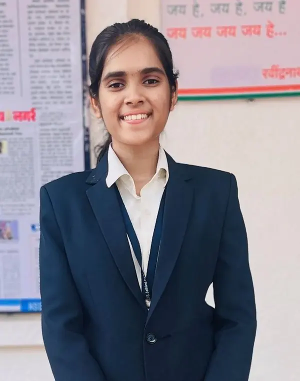
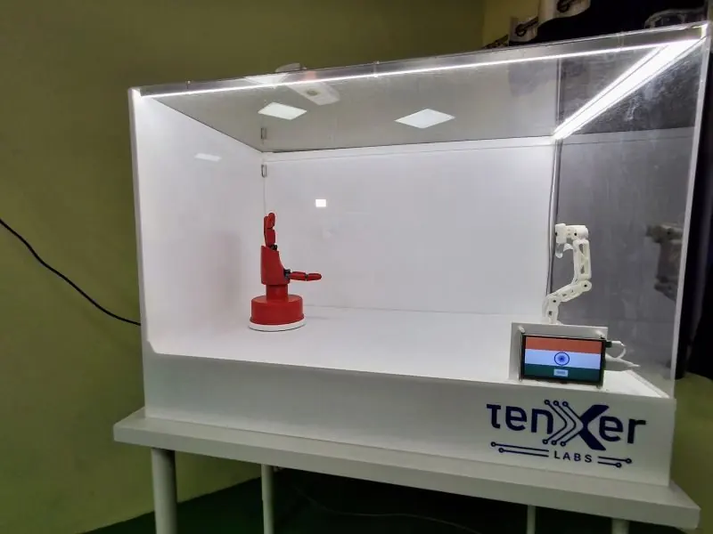
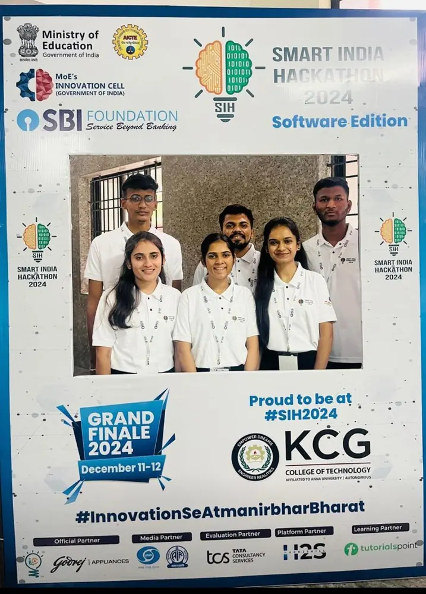
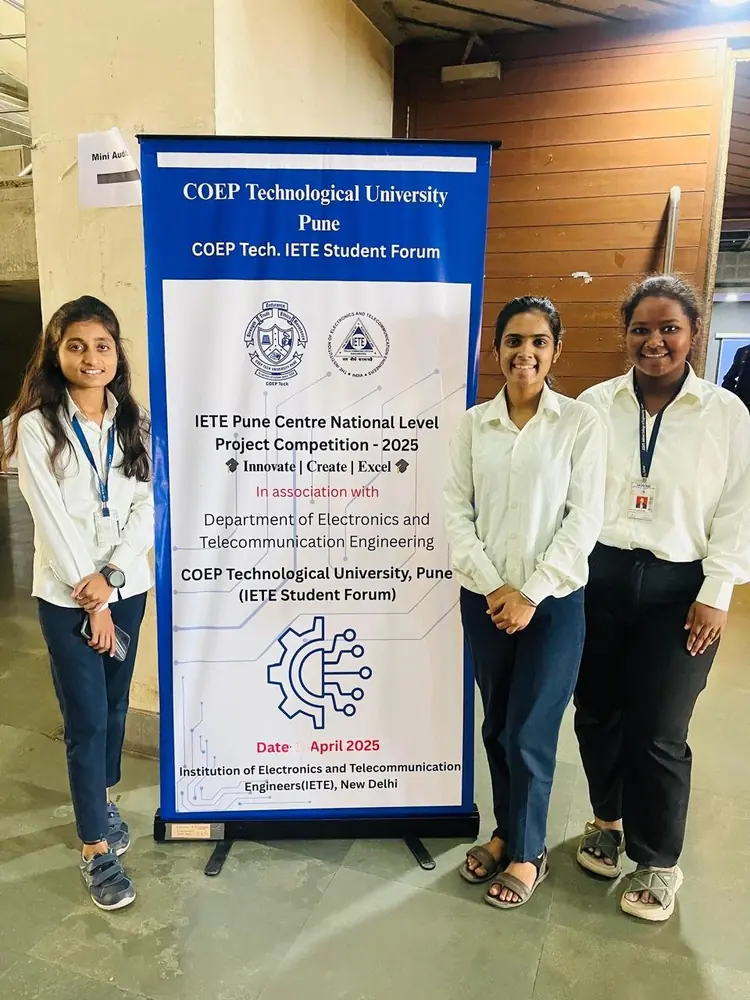
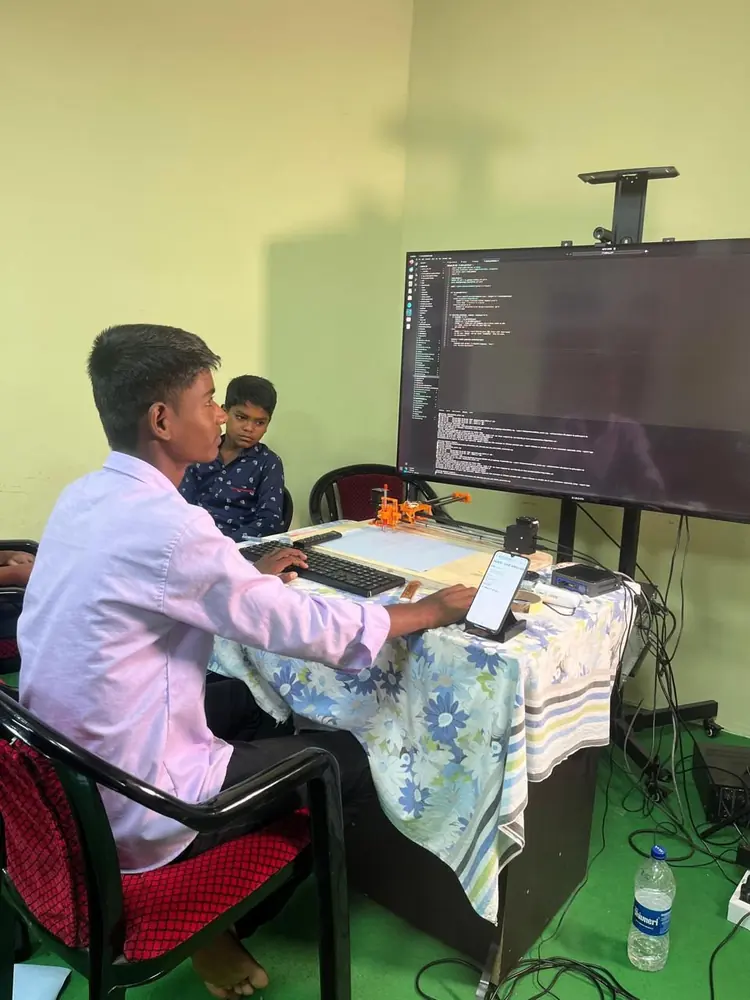
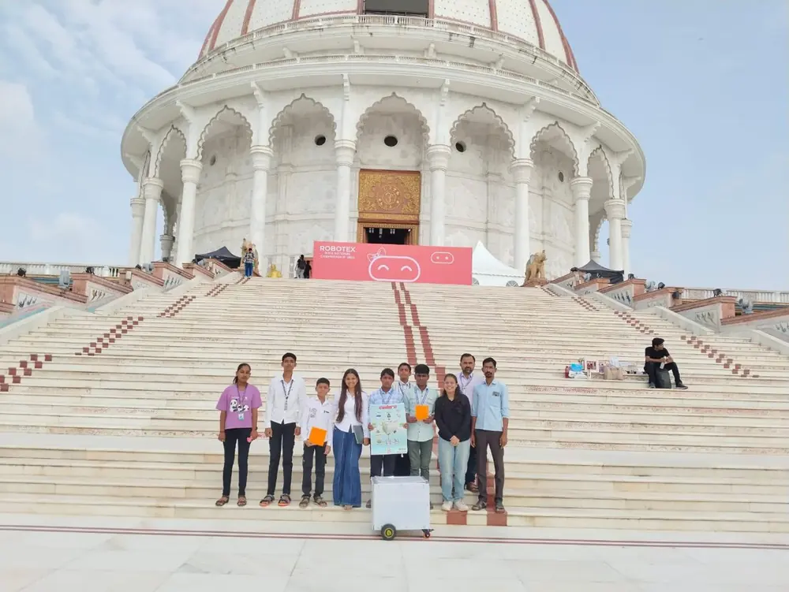
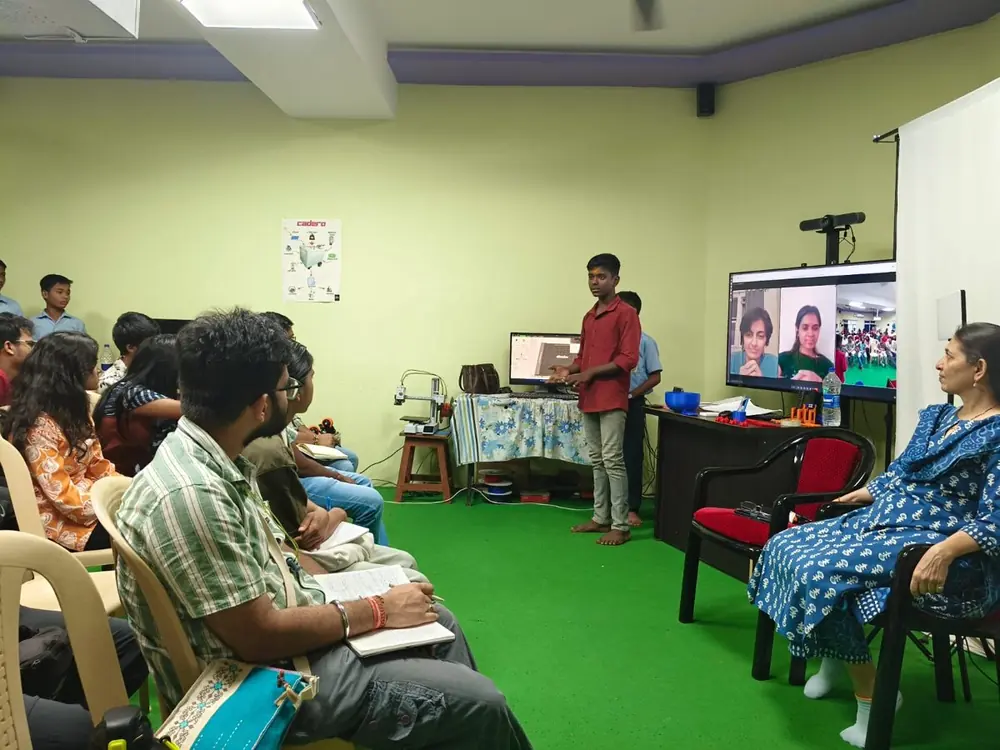
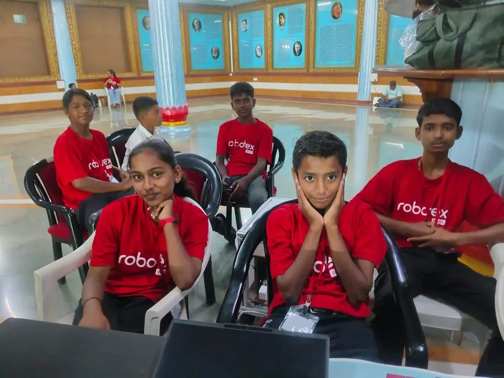

I'm a software engineer working on backend development, infrastructure, AI agents and RAG pipelines. I also take on freelance website projects. Here I write about my projects, my clients and the people I learn from.
Software Engineer at TenXer Labs, BangaloreVolunteer in the Jalihal Makerspace team at Yerala Project SocietyAlumni and volunteer at Friends of Children
Open to job opportunities, freelance projects and problem solving

hi, that's me
What I'm doing now
Three things keep me busy at the moment.
Day job
Working as a software engineer at TenXer Labs.
Volunteering
In the Jalihal Makerspace team, working together with students. Alumni of Friends of Children.
Freelance
Websites for any client, startups included, from first sketch to going live, and fixing problems on existing websites. I'm open to new ones.
How I got here
One internship in March 2025 turned into most of what I do today.
I joined after finishing the Amazing Hand project with the team. I work as a Software Engineer at TenXer Labs, contributing to backend development, AI agent development and LLM-powered applications. My work involves building and maintaining backend systems, improving AI pipelines, and integrating services to deliver reliable and intelligent solutions.
Yerala is a trust that works on rural development, including in schools. I joined as an engineering intern to help solve problems there. Through the projects I worked on, people were introduced to AI and students learned engineering. My internship was extended, and a second project took me to Bangalore. I stayed on as a volunteer in the makerspace team.
I built tools like integrating the Gemini API into software pipelines, learned software development end to end, and worked on IoT-based projects.
National finalist at Smart India Hackathon 2024. More in the college section below.
Skills
What I use most, starting with what I work with every day at my job.
Backend and APIs
REST API design and integration, FastAPI, Flask, WebSockets, Celery, MQTT
Cloud and DevOps
Docker, CI/CD with GitHub Actions, Linux, Git/GitHub, Netlify, Serverless Architecture
Languages
Python, SQL, JavaScript
AI agents and RAG
AI agents in Python on top of existing LLMs, LLM API integration (Gemini API), RAG pipelines, chunking, embeddings, RAG evaluation with precision and recall, MCP
Raspberry Pi, Arduino, Postman, VS Code, Claude Code
Problem solving
I like picking up what's broken, working out why, and making it work better.
Open source
Amazing Hand, the humanoid hand project I helped finish with TenXer Labs, and RoboKavi, my poem-writing plotter, are open source. My code is on GitHub.
Things I've built
Hardware, software and a few websites. Each one taught me something I use now.

Amazing Hand in its display case
Humanoid arm, open source
Amazing Hand
A web platform to control a robotic hand from anywhere. You upload code, drive the hand and watch live video. It was built with TenXer Labs engineers and shown at Embedded World.
A business website with a serverless quotation and lead system. Customers send an inquiry, the owner gets an email, and an admin dashboard behind Netlify Identity keeps every lead in one place.
HTML, CSS, JavaScript, Netlify Functions, Google Sheets
B.E. in AI and Data Science, 2021 to 2025. A hackathon grand finale, a state-level robotics final, a national project competition and photos from all three.

Smart India Hackathon 2024
Grand finale, top 5 finalists, Post Office problem statement
AI Postal Queue Monitoring
We were the first team from our college to reach the Smart India Hackathon grand finale. After many brainstorming sessions and late nights of coding, we presented our solution on the big stage in Chennai.
The system counts people in a postal queue with real-time object detection and shows crowd analytics on a dashboard. We built it during the 36-hour hackathon.
More than the result, it gave us technical experience and taught us how to work as a team.
Anveshana brings school students and engineering students together to build and present projects. My friend Sumedh Dhangar and I reached the state-level finals with a robotic arm that combines gesture and voice recognition, computer vision and advanced control mechanisms.
The competition is as much about mentoring young minds and inspiring curiosity as it is about showing technology.
the robotic arm at work

our team at NLPC-25, COEP Pune
National level project competition, April 2025
Multilayered Home Security System
We presented this at NLPC-25, the IETE Pune Centre's national level project competition at COEP Technological University.
The system protects a home in three layers. RFID and a keypad control the gate, a biometric lock guards the locker, and a motion sensor with a camera watches the backyard. When OpenCV spots a threat, the image is sent on WhatsApp, and the Blink app shows everything live.
FOC supported me through college. Through their internship cell program, I got my internship at Yerala Project Society. Now that I have a job, I stay connected with FOC as an alumni.
I'm part of the makerspace team, where students in grades 8 and 9 build projects with interns and engineers. I work together with the new interns, solving problems as a team, alongside the people who once guided me.
Journal
Short notes on what the work was really like. Tap a row to open it.
Repairing a broken WordPress site for a client in the NetherlandsFreelance
Jalihal.nl was my second client and my first international one. The site belongs to a trust connected to the Netherlands, and I came to it through a connection.
What was broken
Two problems were the biggest. The site's structure had broken, and a database conflict had deleted the site's images. I went through the site piece by piece and fixed everything in WordPress until it worked the way the trust expected.
What I learned
Beyond the technical fixes, I learned how to talk with a client to understand what the real problem is, then work out how to solve it step by step. Now I know the whole process to follow when a problem like this comes up.
What they said
The trust thanked me for giving my time and for fixing the site as quickly as possible. It was a really good experience.
What the students of a village school taught meYerala Project Society
Yerala hired me as an engineering intern in March 2025. The trust works on rural development in Maharashtra, and its schools needed an engineer for their projects. The plan was simple: go there, build the projects, set them up and give demos. It turned into much more. I explained how things worked, the students jumped in, and we ended up building them together. I learned as much from them as they did from me.
I built two projects that mix hardware and software, and used them to introduce students to AI. RoboKavi, the poem-writing plotter, was the first. The internship was meant to be three months and got extended. A second project took me to Bangalore, where the TenXer Labs team and I finished an open source humanoid hand and set it up in the school.

a student running RoboKavitalking with the students and teachers
A manager who gave me room to try
My manager, Pranjal sir, was very supportive. He gave me the freedom to treat each project as my own, so I tried a lot of things. Whenever I got stuck, he was there to help, and he kept pushing me to go further.
What broke on demo day
During one RoboKavi demo, the machine started writing messy, wrong letters. I had to find the problem and solve it on the spot, on the ground.
What the students taught me
The students grow up in a village, far from city surroundings, but their curiosity and how quickly they picked things up surprised me again and again. A student in grade 8 or 9 asked me a technical question about coding and the motor controller, something I never expected at that age. Others gave me ideas, like asking whether RoboKavi could draw something just for them.
Sometimes they fixed problems before I did. Once the pen was writing in the wrong place, and I was adjusting it in the code. The students worked out that the pen was actually set in the wrong position on the hardware, and they fixed it themselves.
When the Amazing Hand arrived, they helped me set up the hardware. One grade 8 student asked a question that surprised me: "If I make a gesture with my hand, will this hand copy me and do the same thing?"
Why it stayed with me
Over time I got emotionally attached to the students. Beyond the work, they told me about their everyday lives, how they go to school and help on their families' farms.
One day they showed me a 3D game you play by wearing goggles, where everything around you appears in 3D. It was new for me too, and we enjoyed it together.
I also felt connected to the teachers, who were always very helpful, and to the aunty who cooked our food, who was very sweet to me. Overall, it was a really good experience.
From intern to volunteer on a makerspace teamJalihal Makerspace
After I started at TenXer Labs, I kept helping Yerala on new projects. New interns joined, and this time we worked on the projects together. When one of us got stuck, we sat down and found the root cause as a team.
We started a makerspace team with students in grades 8 and 9. I work with the interns and the students, and I work alongside the people who once guided me.

the team and Cadero at the Robotex India National Championship 2025

a student presenting Cadero

the students at Robotex
What we're building now
Right now the team is building Cadero, a delivery robot for the campus. I work with the new engineering interns online. When we get stuck, we debug together and figure out the root cause, and I bring in everything I've learned from my own projects and work.
Students leading the way
In the makerspace team, the students now come up with the project ideas themselves, and their thinking keeps going one step further. We only give them a slight push in the right direction. Whenever they need technical help, I explain it to them as an engineer.
Looking back
This journey still surprises me. I started here as an intern. Today I work my job and help the makerspace team side by side, and we keep building together.
Say hello
I'm open to job opportunities, freelance projects and problems worth solving. If you have one, write to me.